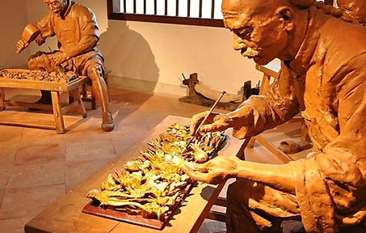

潮州的文化传承
潮州，广东省下辖地级市，位于韩江中下游，是广东省东部沿海的港口城市。是国家历史文化名城，是“潮文化”的重要发源地，享有”南国邦郡“、“岭海名邦”、“海滨邹鲁”、“文化橱窗”、“潮州菜之乡”、“中国优秀旅游城市”、“中国民族民间艺术之乡”等美誉。
潮州，本就是一个充满文化和历史故事的地方，一个喝着单丛茶而在全球出了无数富豪的地方。一个二千二百多年汉族民系文化传承的地方......
潮剧
俗称潮州戏，是荃国十大剧种和八个出国剧种之一。它是由宋元南戏演变而成的，有500多年的历史。潮剧产生于潮州，而后流行于潮州及福建南部、台湾及香港，在东南亚诸国有深远的影响，很多潮剧刻本如《荔镜记》、《金花女》、《苏六娘》，在美国、英国、奥地利和日本等国的图书馆均有收藏。在潮侨最多的泰国，潮州戏班竟有30多个。
潮州陶瓷
潮州工艺琳琅满目，光彩照人，是优秀的潮州文化的一部份，是潮州汉族劳动人民智慧的结晶。潮州的陶瓷，自晋以来，已有深厚的根基，至宋代的笔架山窑，更是名震遐迩。笔架山宋窑有百窑村之称，其瓷器有“白如玉，薄如纸，明如镜，声如磬”的美誉。产品源源不断地远销海外，使潮州成为广东宋代海上陶瓷之路的重要一环。
潮州木雕
广东东部的潮安、揭阳、潮阳、普宁、饶平和澄海一带，明清以来木雕艺术异常发达，具有鲜明的地方特色，自成一个体系。因为这几县旧属潮州府，人们便习惯地称之为“潮州木雕”。
潮州木雕，是中国的一项宝贵的艺术遗产，对于建筑、工艺、雕刻、绘画的发展，都将提供出许多有益的经验。
潮绣
潮州刺绣历史悠久，与广州刺绣又合称为粤绣，是中国四大名绣之一。她工艺精细，风格独特，老一辈的潮州人统称潮绣品为顾绣品，而顾绣品则出自明代顾名世之手，可见潮绣确有其悠久历史。